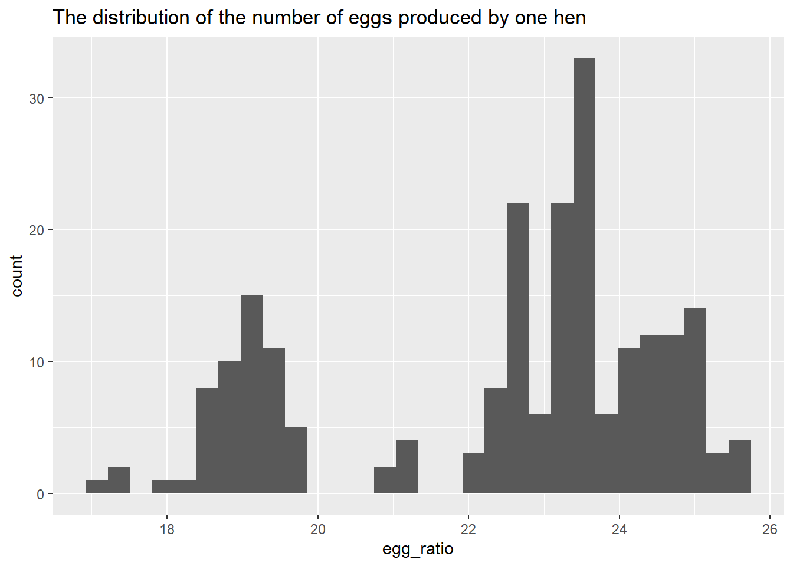
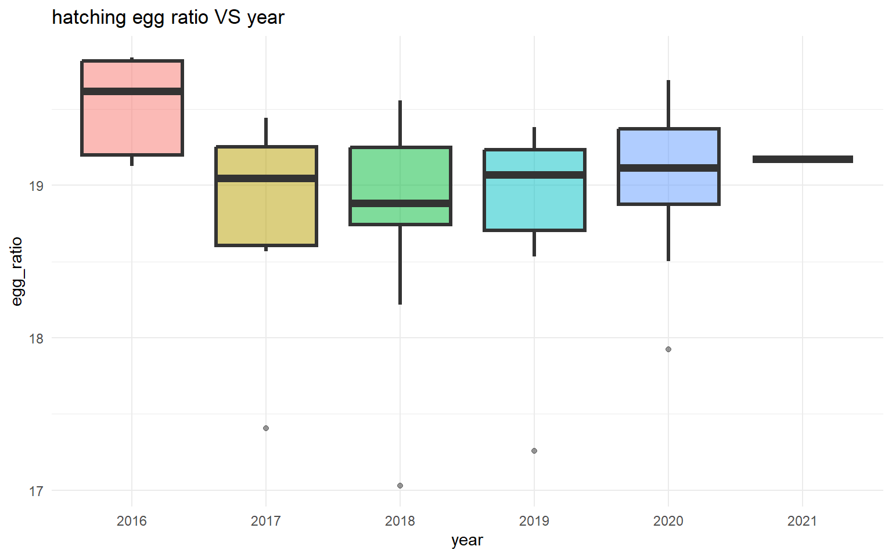

Rows: 220 Columns: 6
── Column specification ────────────────────────────────────────────────────────
Delimiter: ","
chr (3): prod_type, prod_process, source
dbl (2): n_hens, n_eggs
date (1): observed_month
ℹ Use `spec()` to retrieve the full column specification for this data.
ℹ Specify the column types or set `show_col_types = FALSE` to quiet this message.
Rows: 96 Columns: 4
── Column specification ────────────────────────────────────────────────────────
Delimiter: ","
chr (1): source
dbl (2): percent_hens, percent_eggs
date (1): observed_month
ℹ Use `spec()` to retrieve the full column specification for this data.
ℹ Specify the column types or set `show_col_types = FALSE` to quiet this message.
Checking data sets
skim(eggproduction)
Data summary
Name
eggproduction
Number of rows
220
Number of columns
6
_______________________
Column type frequency:
character
3
Date
1
numeric
2
________________________
Group variables
None
Variable type: character
skim_variable
n_missing
complete_rate
min
max
empty
n_unique
whitespace
prod_type
0
1
10
13
0
2
0
prod_process
0
1
3
23
0
3
0
source
0
1
23
23
0
108
0
Variable type: Date
skim_variable
n_missing
complete_rate
min
max
median
n_unique
observed_month
0
1
2016-07-31
2021-02-28
2018-11-15
56
Variable type: numeric
skim_variable
n_missing
complete_rate
mean
sd
p0
p25
p50
p75
p100
hist
n_hens
0
1
110839873
124121204
13500000
17284500
59939500
125539250
341166000
▇▁▁▁▂
n_eggs
0
1
2606667580
3082457619
298074240
423962023
1154550000
2963010996
8601000000
▇▁▁▁▂
skim(cagefreepercentages)
Data summary
Name
cagefreepercentages
Number of rows
96
Number of columns
4
_______________________
Column type frequency:
character
1
Date
1
numeric
2
________________________
Group variables
None
Variable type: character
skim_variable
n_missing
complete_rate
min
max
empty
n_unique
whitespace
source
0
1
8
35
0
31
0
Variable type: Date
skim_variable
n_missing
complete_rate
min
max
median
n_unique
observed_month
0
1
2007-12-31
2021-02-28
2018-11-15
91
Variable type: numeric
skim_variable
n_missing
complete_rate
mean
sd
p0
p25
p50
p75
p100
hist
percent_hens
0
1.00
17.95
6.58
3.20
13.46
17.30
23.46
29.20
▂▅▇▆▆
percent_eggs
42
0.56
17.10
4.29
9.56
14.52
16.23
19.46
24.55
▆▇▇▆▇
# Explore the categories of prod_type and prod_processeggproduction%>%distinct(prod_type,prod_process,source)
# A tibble: 216 × 3
prod_type prod_process source
<chr> <chr> <chr>
1 hatching eggs all ChicEggs-09-23-2016.pdf
2 hatching eggs all ChicEggs-10-21-2016.pdf
3 hatching eggs all ChicEggs-11-22-2016.pdf
4 hatching eggs all ChicEggs-12-23-2016.pdf
5 hatching eggs all ChicEggs-01-24-2017.pdf
6 hatching eggs all ChicEggs-02-28-2017.pdf
7 hatching eggs all ChicEggs-03-21-2017.pdf
8 hatching eggs all ChicEggs-04-21-2017.pdf
9 hatching eggs all ChicEggs-05-22-2017.pdf
10 hatching eggs all ChicEggs-06-23-2017.pdf
# … with 206 more rows
# Explore the sourcecagefreepercentages%>%distinct(source)
# Separate the year and month into two columns# Create a new feature: The number of eggs produced by one henegg_data=eggproduction%>%left_join(cagefreepercentages,by="observed_month")%>%select(-source.x,-source.y)%>%mutate(egg_ratio=n_eggs/n_hens)%>%mutate(year=year(observed_month),month=month(observed_month))%>%select(-observed_month)%>%relocate(year,month)%>%na.omit()
Warning in left_join(., cagefreepercentages, by = "observed_month"): Each row in `x` is expected to match at most 1 row in `y`.
ℹ Row 2 of `x` matches multiple rows.
ℹ If multiple matches are expected, set `multiple = "all"` to silence this
warning.
EDA
Outcome explorations
# Distribution of the eggs ratioegg_data%>%ggplot(aes(egg_ratio))+geom_histogram()+labs(title="The distribution of the number of eggs produced by one hen")
`stat_bin()` using `bins = 30`. Pick better value with `binwidth`.

The number of hens and eggs are positively correlated. Notably there is a huge gap in the middle.
Exploration of production types and production process
# hatching eggs VS table eggsegg_data%>%count(prod_type)
# A tibble: 2 × 2
prod_type n
<chr> <int>
1 hatching eggs 54
2 table eggs 162
More eggs are produced by one hen if the production type is table eggs; egg/hen ratio is higher if the production process if cage free
There are more conventional housing eggs than cage free eggs, there are more organic eggs than non-orgnic eggs
# Month VS number of hens by different production process and different production typesegg_data%>%ggplot(aes(month,egg_ratio,fill=prod_process))+geom_col(alpha=0.5,position="dodge")+facet_wrap(~prod_type)+scale_x_continuous(breaks=seq(1,12,by=1),labels=c("1","2","3","4","5","6","7","8","9","10","11","12"),minor_breaks=NULL)+labs(y="The egg ratio",x="month",title="The egg ratio in different month")+theme_minimal()
The production process for all the hatching eggs is “all” and there are three types of production process for the table eggs
Exploration of time VS egg ratio
# The ratio of table eggs to hens produced every month by different processegg_data%>%filter(prod_type=="table eggs")%>%ggplot(aes(month,egg_ratio))+geom_line(alpha=0.5,size=1.2)+scale_x_continuous(breaks=seq(1,12,by=1),labels=c("1","2","3","4","5","6","7","8","9","10","11","12"),minor_breaks=NULL)+facet_wrap(~prod_process,scales="free_y")+labs(title="table eggs ratio VS month by different process")+theme_minimal()
Warning: Using `size` aesthetic for lines was deprecated in ggplot2 3.4.0.
ℹ Please use `linewidth` instead.
# The ratio of hatching eggs produced every monthegg_data%>%filter(prod_type=="hatching eggs")%>%ggplot(aes(month,egg_ratio))+geom_line(alpha=0.5,size=1.2)+scale_x_continuous(breaks=seq(1,12,by=1),labels=c("1","2","3","4","5","6","7","8","9","10","11","12"),minor_breaks=NULL)+labs(title="hatching egg ratio VS month")+theme_minimal()
# The ratio of table eggs to hens produced every year by different processegg_data%>%mutate(year=factor(year))%>%filter(prod_type=="table eggs")%>%ggplot(aes(year,egg_ratio,fill=year))+geom_boxplot(alpha=0.5,size=1.2,show.legend =FALSE)+facet_wrap(~prod_process,scales="free_y")+labs(title="table eggs ratio VS year by different process")+theme_minimal()
# The ratio of hatching eggs to hens produced throughout yearsegg_data%>%mutate(year=factor(year))%>%filter(prod_type=="hatching eggs")%>%ggplot(aes(year,egg_ratio,fill=year))+geom_boxplot(alpha=0.5,size=1.2,show.legend =FALSE)+labs(title="hatching egg ratio VS year")+theme_minimal()

Overall, the egg ratio is the lowest in Feburary
The table egg ratio is increasing throughout years whereas hatching egg ratio remains stable
Let’s create a model to predict the egg ratio based on year,month,prod_type,prod_process
# set.seed for reproducible resultsset.seed(123)egg_split= egg_data%>%select(year,month,prod_type,prod_process,egg_ratio)%>%initial_split(strata=prod_type)egg_train=training(egg_split)egg_test=testing(egg_split)egg_folds=vfold_cv(egg_train,strata=prod_type)
# Create recipe and workflowegg_rec=recipe(egg_ratio~.,data=egg_train)%>%step_dummy(all_nominal_predictors())egg_wf=workflow()%>%add_recipe(egg_rec)
i Creating pre-processing data to finalize unknown parameter: mtry
Model evaluation
autoplot(rf_rs)
# Selecting the lowest rmserf_best_metrics=rf_rs%>%show_best("rmse")%>%filter(mean==min(mean))# Selecting the tuning parameters with the lowest rmsebest_rf=rf_rs%>%select_best("rmse")# Finalizing the workflowrf_final=rf_wf%>%finalize_workflow(best_rf)# Plotting predicted vs true valuerf_predict=rf_final%>%fit(egg_train)%>%predict(egg_train)egg_train%>%select(egg_ratio)%>%bind_cols(rf_predict)%>%ggplot(aes(egg_ratio,.pred))+geom_point()+geom_smooth()+geom_abline(intercept=0,slope=1)+labs(title="predicted egg ratio VS true egg ratio")
`geom_smooth()` using method = 'loess' and formula = 'y ~ x'
Bagging
# two bagging models# Model specificationstree_spec=bag_tree()%>%set_engine("rpart",times=25)%>%set_mode("regression")mars_spec=bag_mars()%>%set_engine("earth",times=25)%>%set_mode("regression")# Workflowstree_wf=egg_wf%>%add_model(tree_spec)mars_wf=egg_wf%>%add_model(mars_spec)
# Checking "rmse" metrics of these modelstree_best_metrics=collect_metrics(tree_rs)%>%filter(.metric=="rmse")mars_best_metrics=collect_metrics(mars_rs)%>%filter(.metric=="rmse")# Plotting predicted value VS true valuemars_rs%>%collect_predictions()%>%group_by(id)%>%ggplot(aes(egg_ratio,.pred,color=id))+geom_point()+geom_abline(intercept=0,slope=1,lty=2,size=1.5,color="gray80")+geom_smooth(se=FALSE)+labs(title="predicted egg ratio VS true egg ratio by bagging")
`geom_smooth()` using method = 'loess' and formula = 'y ~ x'
LASSO
set.seed(1234)# LASSO model specificationglmnet_spec=linear_reg(penalty=tune(),mixture=1)%>%set_engine("glmnet")# LASSO workflowglmnet_wf=egg_wf%>%add_model(glmnet_spec)# Narrowing down the penalty rangenarrow_penalty=penalty(range=c(-3,0))glmnet_rs=tune_grid( glmnet_wf,resamples = egg_folds,grid=25,param_info =parameters(narrow_penalty))
Model evaluation
# Checking the tuning parameters and their respective model performancesautoplot(glmnet_rs)
# Select the simplest model that has the same performance as the best modelglm_best_penalty=glmnet_rs%>%select_by_one_std_err(-penalty,metric="rmse")glmnet_final=glmnet_wf%>%finalize_workflow(glm_best_penalty)glmnet_fit=glmnet_final%>%fit(egg_train)glmnet_predict=glmnet_fit%>%predict(egg_train)# Plotting predicted egg ratio VS true egg ratioegg_train%>%select(egg_ratio)%>%bind_cols(glmnet_predict)%>%ggplot(aes(egg_ratio,.pred))+geom_point()+geom_abline(intercept=0,slope=1,lty=2,size=1.5,color="gray80")+geom_smooth(se=FALSE)+labs(title="predicted egg ratio VS true egg ratio by LASSO")
`geom_smooth()` using method = 'loess' and formula = 'y ~ x'
XGBOOST
# Model specificationxgb_spec <-boost_tree(trees =1000,tree_depth =tune(), min_n =tune(),loss_reduction =tune(), ## first three: model complexitysample_size =tune(), mtry =tune(), ## randomnesslearn_rate =tune() ## step size) %>%set_engine("xgboost") %>%set_mode("regression")xgb_spec
Boosted Tree Model Specification (regression)
Main Arguments:
mtry = tune()
trees = 1000
min_n = tune()
tree_depth = tune()
learn_rate = tune()
loss_reduction = tune()
sample_size = tune()
Computational engine: xgboost
Warning: No value of `metric` was given; metric 'rmse' will be used.
best_xgb=xgb_res%>%select_best("rmse")final_xgb=xgb_wf%>%finalize_workflow(best_xgb)xgb_predict=xgb_wf%>%finalize_workflow(best_xgb)%>%fit(egg_train)%>%predict(egg_train)# Plotting predicted value VS true valueegg_train%>%select(egg_ratio)%>%bind_cols(xgb_predict)%>%ggplot(aes(egg_ratio,.pred))+geom_point()+geom_abline(intercept=0,slope=1,lty=2,size=1.5,color="gray80")+geom_smooth(se=FALSE)+labs(title="predicted egg ratio VS true egg ratio by xgoost")
`geom_smooth()` using method = 'loess' and formula = 'y ~ x'